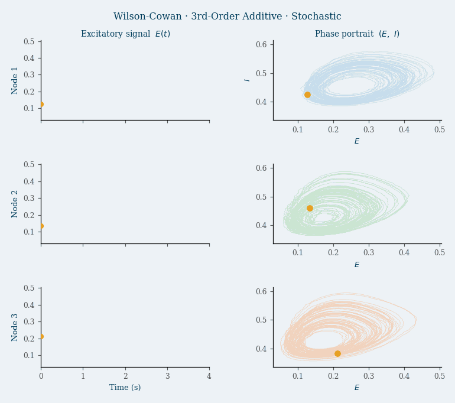

Abstract
Coupling Architectures
The four excitatory coupling architectures implemented in this study differ in the structural order of the inter-node interaction and whether coupling is additive or diffusive.
Standard second-order coupling. Higher-order structure arises solely from the nonlinear sigmoid.
Diffusive coupling vanishes for homogeneous states; suppresses common-mode activity.
Explicit higher-order coupling; the interaction is quadratic before the sigmoid.
Diffusive higher-order coupling; vanishes for synchronous states.
Solid edges = additive coupling | Dashed edges = diffusive coupling | Shaded triangle = explicit 3rd-order hyperedge
Simulation — Wilson–Cowan Oscillatory Dynamics
The animation below shows a representative stochastic simulation in the oscillatory regime (post-Hopf bifurcation). Each row corresponds to one of the three network nodes. The left column shows the excitatory activity E(t) over time; the right column shows the corresponding phase portrait E vs I, revealing the limit cycle attractor.

Coupling architecture: third-order additive | Regime: Oscillatory (limit cycle) | Noise: σE = 0.01 | dt = 10−3 s
Parameter Space
| Parameter | Range | Steps | Role |
|---|---|---|---|
External drive P | 1.0 → 10.0 | 20 | Controls proximity to Hopf bifurcation |
Second-order coupling K | 0.0 → 1.0 | 20 | Inter-node second-order interaction strength |
HOI coupling K₃ | 0.0 → 1.0 | 20 | Explicit third-order interaction strength |
Sigmoid slope a_E | 0.5 → 3.0 | 20 | Local nonlinear gain of excitatory population |
Each grid point: T = 10 s, dt = 10−3 s, σE = 0.01, 2 s transient discarded.
Repository Structure
Criticality_HOI/ ├── Scripts/ # Python source modules (importable package) │ ├── parameters.py # Heterogeneous per-node parameter sets │ ├── parameters_random.py # Homogeneous global parameters & sweep grids │ ├── dynamics.py # Wilson–Cowan RHS for all 4 coupling types │ ├── simulation.py # RK4 integrator + stochastic wrappers │ ├── metrics.py # TC, DTC, cumulants, skewness, kurtosis │ ├── oscillation_detection.py # Poincaré-section limit-cycle detector │ └── visualization.py # Matplotlib + Plotly plotting utilities │ ├── Notebook/ # Jupyter notebooks for all experiments │ ├── W_C_2nd_Order.ipynb # Second-order additive (PA): (P, K) sweep │ ├── W_C_2nd_Order_Diffusive.ipynb # Second-order diffusive (PD): (P, K) sweep │ ├── W_C_3rd_Order.ipynb # Third-order additive (TA): (P, K) sweep │ ├── W_C_3rd_Order_Diffusive.ipynb # Third-order diffusive (TD): (P, K) sweep │ ├── W_C_*_Lines.ipynb # Metric curves vs K (all models) │ ├── W_C_*_a+k.ipynb # a_E–K sigmoid-slope sweeps │ └── Results_comparisons.ipynb # Load saved results → paper figures │ ├── results/ # Pre-computed .npz arrays and PDF figures ├── data/ # Simulation inputs ├── archive/ # Legacy notebooks and scripts ├── requirements.txt └── README.md
Authors
Key References
- Wilson, H.R. & Cowan, J.D. (1972). Excitatory and inhibitory interactions in localized populations of model neurons. Biophysical Journal, 12(1), 1–24.
- Battiston, F. et al. (2021). The physics of higher-order interactions in complex systems. Nature Physics, 17, 1093–1098.
- Bick, C. et al. (2023). What are higher-order networks? SIAM Review, 65(3), 686–731.
- Hindriks, R. et al. (2024). Higher-order functional connectivity analysis of resting-state fMRI using multivariate cumulants. Human Brain Mapping, 45(5), e26663. DOI
- Varley, T.F. et al. (2023). Partial entropy decomposition reveals higher-order information structures in human brain activity. PNAS, 120(30), e2300888120.
- Stramaglia, S. et al. (2021). Quantifying dynamical high-order interdependencies from the O-information. Physical Review Research, 3, 033090.
- Rosas, F.E. et al. (2022). Disentangling high-order mechanisms and high-order behaviours in complex systems. Nature Physics, 18, 476–477.
- Kazemi, S. et al. (2024). Criticality and excitable dynamics in neural mass models. arXiv preprint.